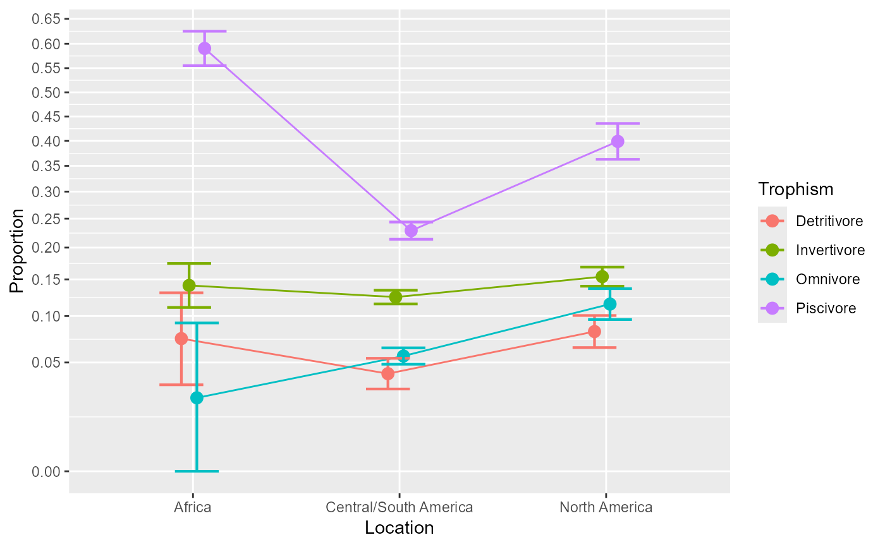

The data, taken from Arrington et al. (2002) , is a dataset examining the distribution of fishes with empty stomachs, classified over three factors: 'Collection location' (3 levels: Africa, Central/South America, North America), 'Diel feeding behavior' (2 levels: diurnal, nocturnal), 'Trophic category' (4 levels: Detrivore, Invertivore, Omnivore, Piscivore). It is therefore a 3 × 2 × 4 design with 24 cells. The original data set also contains Order, Family and Species of the observed fishes and can be obtained from https://figshare.com/collections/HOW_OFTEN_DO_FISHES_RUN_ON_EMPTY_/3297635 It was commented in Warton and Hui (2011) .
ArringtonEtAl2002A data frame.
Arrington DA, Winemiller KO, Loftus WF, Akin S (2002).
“How often do fishes “run on empty”?”
Ecology, 83(8), 2145--2151.
doi:10.1890/0012-9658(2002)083[2145:HODFRO]2.0.CO;2
.
Warton DI, Hui FK (2011).
“The arcsine is asinine: The analysis of proportions in ecology.”
Ecology, 92, 3--10.
doi:10.1890/10-0340.1
.
# see the dataset
ArringtonEtAl2002
#> Location Trophism Diel s n
#> 1 Africa Detritivore Diurnal 16 217
#> 2 Africa Invertivore Diurnal 76 498
#> 3 Africa Invertivore Nocturnal 55 430
#> 4 Africa Omnivore Diurnal 2 87
#> 5 Africa Piscivore Diurnal 673 989
#> 6 Africa Piscivore Nocturnal 221 525
#> 7 Central/South America Detritivore Diurnal 68 1589
#> 8 Central/South America Detritivore Nocturnal 9 318
#> 9 Central/South America Invertivore Diurnal 706 7452
#> 10 Central/South America Invertivore Nocturnal 486 2101
#> 11 Central/South America Omnivore Diurnal 293 6496
#> 12 Central/South America Omnivore Nocturnal 82 203
#> 13 Central/South America Piscivore Diurnal 1275 5226
#> 14 Central/South America Piscivore Nocturnal 109 824
#> 15 North America Detritivore Diurnal 142 1741
#> 16 North America Invertivore Diurnal 525 3368
#> 17 North America Invertivore Nocturnal 231 1539
#> 18 North America Omnivore Diurnal 210 1843
#> 19 North America Omnivore Nocturnal 7 38
#> 20 North America Piscivore Diurnal 536 1289
#> 21 North America Piscivore Nocturnal 19 102
# The columns s and n indicate the number of fishes with
# empty stomachs (the "success") and the total number
# of fishes observed, respectively. Thus s/n is the proportion.
# run the ANOPA analysis
w <- anopa( {s; n} ~ Location * Diel * Trophism, ArringtonEtAl2002)
#> ANOPA::fyi(1): Combination of cells missing. Adding:
#> Location Diel Trophism s n
#> Africa Nocturnal Detritivore 0 0
#> Africa Nocturnal Omnivore 0 0
#> North America Nocturnal Detritivore 0 0
#> Warning: ANOPA::warning(1): Some cells have zero over zero data. Imputing...
# make a plot with all the factors
anopaPlot(w)
# ... or with a subset of factors, with
anopaPlot(w, ~ Location * Trophism)

# Because of the three-way interaction, extract simple effects for each Diel
e <- emProportions( w, {s;n} ~ Location * Trophism | Diel )
#> Not yet programmed...
# As the two-way simple interaction for Nocturnal * Diel is close to significant,
# we extract the second-order simple effects for each Diel and each Location
e <- emProportions(w, {s;n} ~ Trophism | Location * Diel )
#> Not yet programmed...
# As seen, the Trophism is significant for Noctural fishes of
# Central/South America.